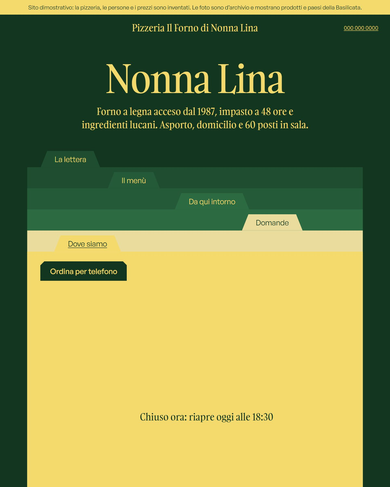
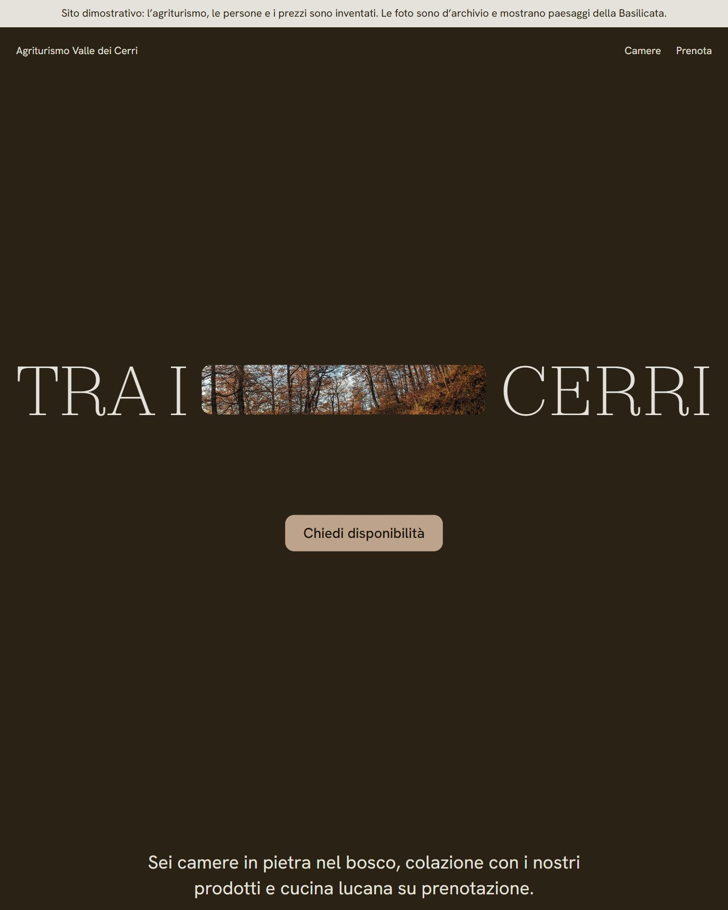

Siti dimostrativi per attività locali della Basilicata. Le attività, i nomi, i prezzi e i numeri sono inventati; le foto sono d’archivio, con l’autore citato in fondo a ogni sito. Aprili dal telefono: è lì che li usano i clienti.

